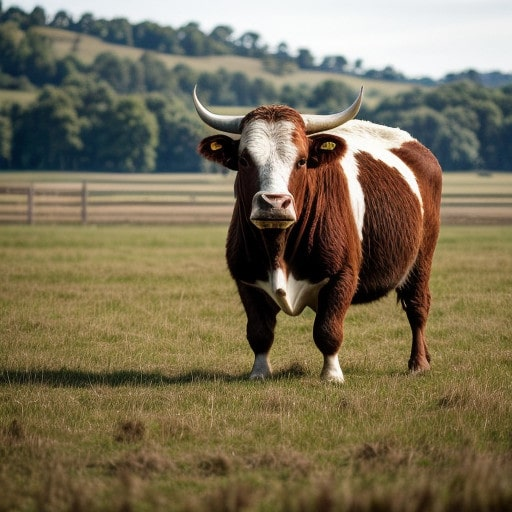

Live NGSI-LD Animal and AgriParcel records, queried from the context broker — 2026-09-06
urn:ngsi-ld:Animal:cow021

urn:ngsi-ld:AgriParcel:003
Loam is an even three-way mix of sand, silt and clay — good structure, moderate drainage, no single texture dominating.
Sharing this pasture (06:36 GPS snapshot):
8 grazing head on the convex-hull footprint reads ~4 LSU/ha — above the ~2–3 typical for set-stocked grazing, consistent with a rotational cell rather than a fixed paddock.